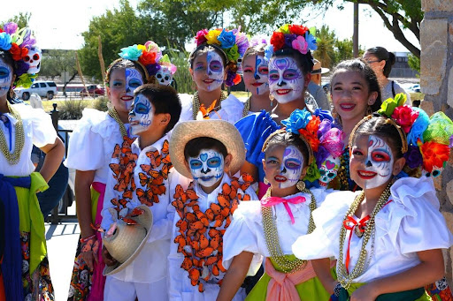

Culture
Whats makes the people here special.

Mexico has a rich and diverse culture and history. The culture of Mexico is some of the richest in the world from the ruins, the people to even the food.
First inhabited more than 10,000 years ago, the cultures that developed in Mexico became one of the cradles of civilization. During the 300-year rule by the Spanish, Mexico was a crossroads for the people and cultures of Europe, America, West Africa, and with minor influences from parts of Asia. Starting in the late 19th century, the